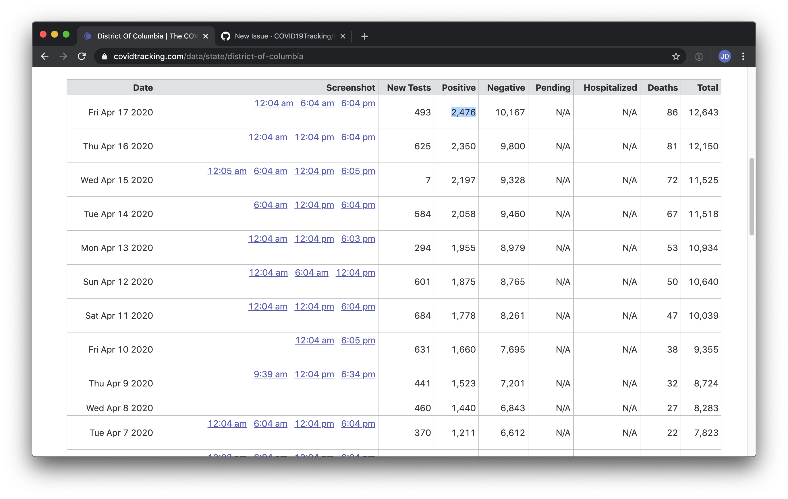
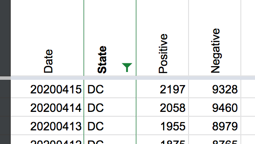
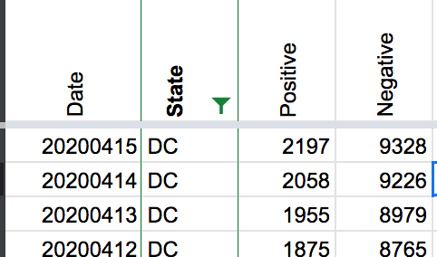

DC negatives dropped on Wed Apr 15
Issue number 219
jdmaresco opened this issue on April 18, 2020 at 3:12 pm
Labels Historical Data stale
It appears the correct numbers are recorded for positives and totals. But it’s odd/doesn’t really make sense to see negatives drop.

Comments
stale[bot] commented on May 8, 2020 at 10:09 am
This issue has been automatically marked as stale because it has not had recent activity. It will be closed if no further activity occurs. Thank you for your contributions!
stale[bot] commented on May 18, 2020 at 11:45 am
This issue has been closed because it was stale for 15 days, and there was no further activity on it for 10 days. You can feel free to re-open it if the issue is important, and label it as “not stale.”
Hi @jdmaresco
The 4/14 negatives number was incorrect. We are going to amend it based on hisorical information DC provides here Looking at screenshots it seems that the state reported a total number of tests and then revised it down the next day.
Before 
After 